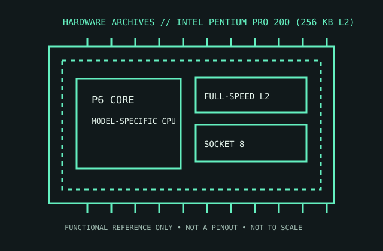

[ PENTIUM PRO AND PENTIUM M // IDENTIFIED PROCESSOR ]
Intel Pentium Pro 200 (256 KB L2)
This 200 MHz Pentium Pro P6 variant pairs its core with 256 KB of full-speed secondary cache inside a Socket 8 processor module.

MODEL IDENTIFICATION: Intel Pentium Pro 200 (256 KB L2). Compare the printed part number, speed grade, package, cache configuration, and stepping with the cited documentation; do not transfer one variant’s limits to another.
Recorded specifications
| Cataloged part | Intel Pentium Pro 200 (256 KB L2) |
|---|---|
| Era / family | Pentium Pro / P6, 1995; 200 MHz product with 256 KB L2 cache. |
| Key specifications | 200 MHz core and bus; 32 KB L1 (16 KB instruction + 16 KB data); 256 KB on-package L2 cache at core speed; 387-contact Socket 8 module. This identified cache-size variant has the 256 KB L2, not the 512 KB or 1 MB versions. |
| Interface / fit | Requires Socket 8 motherboard and a BIOS/platform supporting the Pentium Pro speed and exact module. Socket 8 is not a Socket 7 or Slot 1 interface. |
| Variant distinction | Pentium Pro modules were sold with 256 KB, 512 KB, or 1 MB L2; cache capacity is part of the specific processor variant and must be read from its marking/OPN. |
Compatibility and variants
- Requires Socket 8 motherboard and a BIOS/platform supporting the Pentium Pro speed and exact module. Socket 8 is not a Socket 7 or Slot 1 interface.
- Pentium Pro modules were sold with 256 KB, 512 KB, or 1 MB L2; cache capacity is part of the specific processor variant and must be read from its marking/OPN.
- Confirm the system manufacturer’s exact processor support list, firmware minimum, board revision, power/thermal envelope, and memory requirements before installation.
Service and archival notes
Inspect the ceramic module, underside contacts, and socket-8 retention. Preserve the cache-capacity identification and motherboard chipset/BIOS; later Pentium II processors are not drop-in replacements.
Preserve provenance and a record of the exact marking, condition, tested board/platform, firmware, cooling, memory configuration, and test conditions. Separate published specification limits from observations made on a particular surviving system.
Sources & further reading
- Intel Pentium Pro Processor at 200 MHz data sheet — manufacturer model-family specificationsSpecific model or manufacturer-family reference; verify revision and configuration against the device marking and platform documentation.
- Pentium Pro 200 MHz / 256 KB cache model identification — CPU World referenceSpecific model or manufacturer-family reference; verify revision and configuration against the device marking and platform documentation.
- Intel Pentium Pro launch history — Intel Museum / product historySpecific model or manufacturer-family reference; verify revision and configuration against the device marking and platform documentation.
Third-party reference pages and document archives are finding aids. The matching manufacturer datasheet, product specification, and board support documentation take precedence for the exact revision and host.